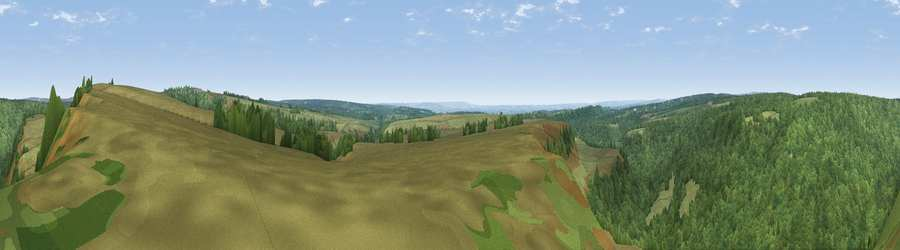

Viewpoint near Levisham
#13232 in England · top 30% of its area beats it · near Levisham · open accessWhere it is
The exact computed spot (SE 82975 93225). Click the marker for map links.
Public access: this spot lies on mapped open-access land (CRoW Act 2000) — you may roam here on foot. Computed from Natural England's CRoW access layer and OpenStreetMap rights of way — not the legal definitive map. Always verify locally.
The view, rendered

A 360° render of this exact spot computed from the terrain model, tree cover and land cover — summer colours, afternoon light, calibrated against photographs of famous viewpoints. Real trees, hedges and buildings will differ in detail.
The panorama
Grey silhouette: terrain skyline in each direction (720 bearings, Earth curvature and refraction included). Dashed green: skyline with trees (+15 m) and buildings (+8 m) as obstacles. Blue strip: how far the ground is visible on each bearing.
Where the view opens
Wedge length = distance to the farthest visible ground on that bearing (vegetation-aware). Rings at 10, 25 and 50 km.
What fills the view
52% woodland · 46% grassland · 2% cropland
Angular shares of the visible panorama (visual magnitude), not map area. Landscape diversity 0.34 (0–1 Shannon).
Key numbers
More beautiful places nearby
The staircase of upgrades: each row has a higher view potential than everything closer. Driving times are estimates from straight-line distance, calibrated against real road routing — check an actual route before setting out.
| Place | Direction | Drive | Score |
|---|---|---|---|
| Viewpoint near Levisham | NE · 1 km | ~3 min | 59.8 |
| Whinny Nab | ENE · 4 km | ~9 min | 64.9 |
| Langdale Rigg End | E · 10 km | ~19 min | 65.1 |
| Ana Cross | W · 10 km | ~20 min | 65.9 |
| Pen Howe | NNE · 11 km | ~21 min | 67.7 |
| Flat Howe | NNE · 12 km | ~22 min | 76.4 |
| Viewpoint near Eskdaleside | NNE · 12 km | ~23 min | 78.4 |
| Viewpoint near Eskdaleside | NNE · 13 km | ~23 min | 80.7 |
54.32786, -0.72562 · source: screening · position refined by local search. Computed location — check access rights before visiting.